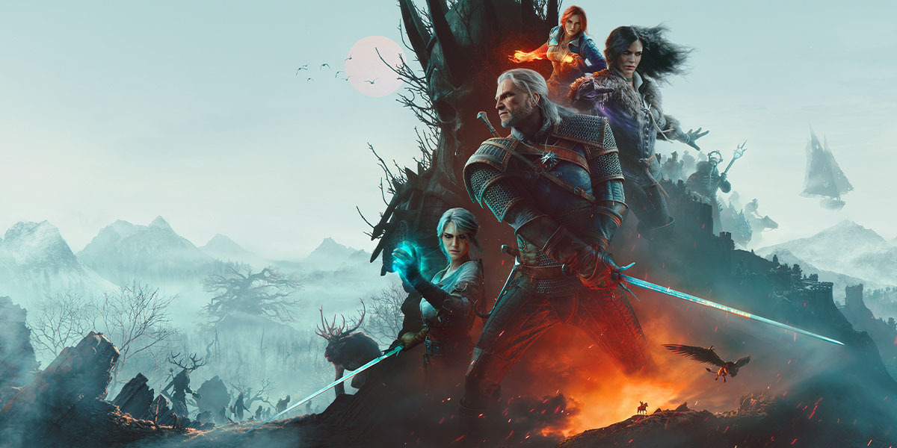

RPG / Otwarty Świat
The Witcher 3: Wild Hunt
Jedna z najlepszych gier RPG w historii. Urzekła mnie niesamowitym klimatem, słowiańskim folklorem oraz kapitalnie napisanymi zadaniami pobocznymi. Historia Geralta z Rivii poszukującego Ciri trzyma w napięciu do samego końca, a dbałość o detale świata przedstawionego zachwyca za każdym razem.